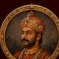
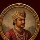
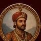
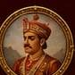

Kahlur Fort Construction
The mighty fort that stood as the pride and protector of the kingdom.

Step into the timeless journey of Bilaspur, where every ruler, every battle and every event has a story to tell.




The mighty fort that stood as the pride and protector of the kingdom.

Stories of valor, bravery and unwavering courage of our warriors.

A golden era of art, architecture and culture under visionary rulers.

The changing times and Bilaspur's journey into modern India.
Let our AI bring history to life. Choose a ruler, event or era and listen to the story in an immersive way.

Welcome to Virasat E Kehloor!
I am your AI storyteller. Ask me anything about the glorious past of Bilaspur.
Listen to the spoken legends of ancient Bilaspur
A celebrated monarch whose tenure defined the diplomatic, cultural, and military ascendancy of the Kehloor kingdom in the Western Himalayas.
Kot Kahlur was built on the highest ridge of Naina Devi hills by Raja Bir Chand, founder of the state. It served as the impregnable shield of the Chandel dynasty, with commanding views of the Sutlej river gorge and surrounding hill states.
The Chronological Lineage of Bilaspur (697 AD – 1948 AD)
Raja Bir Chand, an emigrant from Chanderi (Bundelkhand), founded the princely state of Kahlur and built Kot Kahlur fortress.
Raja Dip Chand relocated the royal capital from Sunhani to the banks of the Sutlej, founding modern Bilaspur (originally Vyaspur).
A glorious epoch of art, literature, and sovereign consolidation across the hill principalities.
Revolutionized land revenue, built carriage roads, introduced new crops, and established classical administrative systems.
The last ruling Raja of Bilaspur before its accession to independent India and the eventual creation of Himachal Pradesh.
Masterpieces of Bilaspur Pahari Miniature Painting & Heritage Archives


Princely State Boundaries, Fort Network, and the Ancient Sutlej River Basin

Historical decrees, copper plate inscriptions, and diplomatic archives
Issued by Raja Dip Chand in 1654 AD commemorating the sanctification of the new royal capital along the sacred Sutlej river.
Diplomatic accord between the Hill Rajas of Kehloor and Guru Gobind Singh Ji, establishing mutual peace and boundary demarcation.
Royal endowment grant for the maintenance of ancient temple shrines and classical educational ashrams.
Virtual Exploration of Kot Kahlur & The Submerged Temples
Curated research publications, royal genealogy charts, and guides
Comprehensive historical documentation of the Chandel dynasty from 697 to 1948 AD.
⬇ Download PDFHigh-resolution genealogy pedigree chart of Bilaspur monarchs and royal lineages.
⬇ Download ChartRare archival photography collection of the ancient town and temples before Govind Sagar lake.
⬇ Download Archive